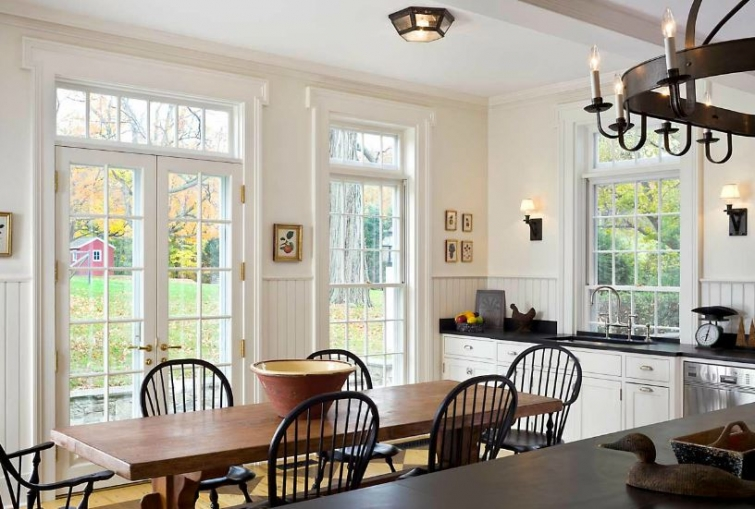
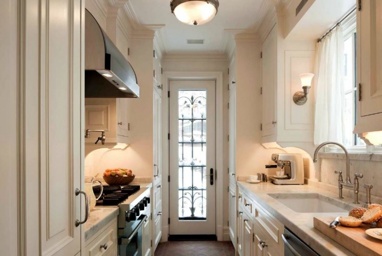

.png)
.PNG)
.PNG)
.PNG)
.PNG)
.PNG)
.JPG)
.JPG)
.PNG)
.PNG)


If you have had enough snow this year to last a lifetime, perhaps the photo above will give you hope that spring and summer will one day come again. Â That beautiful home is a “summer cottage” in Southampton designed by John B. Murray. Â I thought you might enjoy seeing some of his work today. Â It is truly traditional design at its finest.
His firm is located in New York, and much of their work is there –
from brownstones with kitchens like this one…
to farmhouses with charming bedrooms like the one below.
 They have also done many homes in the Hamptons, like this one…
They have also done many homes in the Hamptons, like this one…
with its beautiful kitchen.
As I am sure you can tell from the photos, much of the work of this firm is classically styled. Â They work closely with their client to create a home with a “sense of place.” Â Here is one in Connecticut that I just love.
Here is another view of its exterior.
Care to take a peek inside? 🙂
The attention to detail is just amazing.
That home has been published in several periodicals including New York Space, New Old House, and Connecticut Cottages and Gardens. Here is another home in Connecticut from their design boards.
I love the simple but timeless style of the garage.And what a wonderful place by the pool!
John B. Murray worked for a number of years with the prestigious firm of Ferguson Murray and Shamamian before starting his own firm in 1997. Â That firm was also known for its classically designed interiors. Â I mentioned that John B. Murray’s architectural firm is located in New York, but would you believe they designed a home in Sea Island, Georgia? It’s true. The style fits perfectly with the architecture of the island.
the porch…
the kitchen…the children’s bedroom
and one of the guest bedrooms.
You can see evidence of colonial influence in the rooms above, but I prefer their rooms that have a little less of that style…like this summer cottage.
Here is the exterior that goes with those rooms.
As gorgeous as that one is, there is still one more home that I actually like even better than that one. (Hard to believe, right?) Â My favorite is a home they designed on the Hudson River. Â It was featured last year in the Spring-Summer issue of New Old House. Â See what you think.
the master bath…
the kitchen
and the best of them all…the porch with a pergola. Â Doesn’t that look like the most relaxing space ever?
I hope you have enjoyed seeing these gracious rooms from John B.Murray. Â All of the photos came from his website, and there are many many more rooms to see there if you have time to peruse them.
Thanks for visiting here today!
until next time…


.PNG)
Loved them all!! Will definitely go to his website to check out more of his work! All of the houses you showed were absolutely gorgeous and just what I would want were I in the position to have a home designed for my family!
——————————————————————-
He does some beautiful work, doesn’t he? Hope you clicked over to enjoy many more rooms. 🙂
Kelly
I have to say I am swooning over too many of the pictures in this post. I am a traditionalist, tried and true. From that large farm table with Windsor chairs (yep, that’s my kitchen), though I love that glassed room with the wicker chairs all around, in that summer cottage….Dining with nature from sunrise to sunsets….how lovely. I love that cedar shingled siding..(Hampton’s)…ugh! Those built in beds are quickly becoming a favorite of mine too. From the spacious bath to the lovely pool area….like I said…Swooning! Sigh!
——————————————————————
I think you liked them all Debra! Yes, you must be a traditionalist through and through. 🙂
Kelly
Ok Kelly,
My favorite home is the one on Connecticut. I love the porch with that amazing fireplace and the kitchen with that green stained glass window and green oven. Wow! My second favorite is the home with the boys bedroom in it! That built in bunk bed and chairs are stunning. Thanks for sharing these with us. Take care.
——————————————————————–
The design of that bunkbed was unique. I really loved that one too! Thank you for reading the post Dawn!
Kelly
Traditional style is still my first love. Thank you for sharing these wonderful examples with us~
——————————————————————-
Mine too Susan. So glad you enjoyed the houses!
Kelly
This was a much needed breath of fresh air today! It is still dreary and messy here in Bham, and it was nice to get lost in all this loveliness.
——————————————————————-
I am so sorry you still have the dreary cold there Ellen, but I am glad you could brighten your day with these houses. Thank you for stopping by today. And I hope the sunshine returns soon!
Kelly
Wow! I love that kitchen with the industrial stools. And, what beautiful exteriors! I think those houses should be movie sets. Thanks for sharing, Kelly!
——————————————————————–
I liked that one too Kathy. One of them reminded me of Something’s Gotta Give, so I agree. They would make great movie sets!
Kelly
Kelly, Eye candy indeed! I love the style of these homes…classic and timeless! Sometimes it feels like everyone is jumping on the eclectic, bright colors and odd decor pieces everywhere bandwagon, so seeing these photos is a good reminder that beautiful, traditional, classic style is still appealing to many of us. Thanks for sharing!
——————————————————————-
I am glad you liked them Gracia. They are truly classic and timeless like you said. Sometimes I wonder if those of us who are fans of traditional style are in the minority, since traditional style does not seem to make it into shelter magazines as much.
Kelly
I needed this! Am in Richmond, Va. and woke up to snow and more snow. Wonderful post. Thanks!
——————————————————————–
So glad it could brighten your day! Thank you for taking the time to leave a comment.
Kelly
Kelly, Fabulous post! I love how you find all this eye candy for us.
——————————————————————-
Thanks Robin!! John B. Murray homes certainly are the eye candy. 🙂
Kelly
I am currently gazing at 7 to 8 inches of fluffy new fallen white snow. It is absolutely beautiful BUT by this weekend I will be dreaming about your pool picture with the inviting chaise loungers in their white cushions!
———————————————————————
All this snow is unbelievable! Enjoy your views. We are supposed to be in the seventies next week, so I guess we are going to get absolutely nothing in terms of snow this year. They’ll probably have 10 snow days next year when I am retired!
Kelly
Kelly, I always enjoy your post!
——————————————————————
Thank you Joy, and thank you for reading!
Kelly
Kelly,
What a gorgeous display of some absolutely beautiful homes. I think my favorite one is the summer cottage, if you can call it that, with the one on the Hudson River coming in at a close second. Thanks so much for letting us see these classy homes. Take care, Lindy
——————————————————————–
I had a hard time choosing my favorite, too Lindy. I think we could all be happy in any of them. 🙂
Kelly